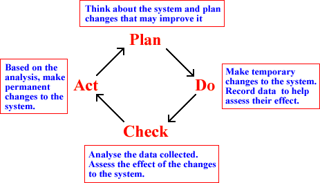

Continuous quality improvement
Statistical analysis is an important part of long-term monitoring and improvement of the performance of many types of system. This process is often called continuous quality improvement.
The statistical part of the process again involves a feedback cycle of data collection and analysis, aimed at improving aspects of the system.

The Plan-Do-Check-Act cycle is most often used in commerce and industry, but can also be used to 'improve' many biological and other systems.